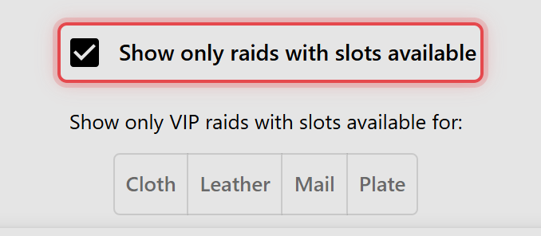
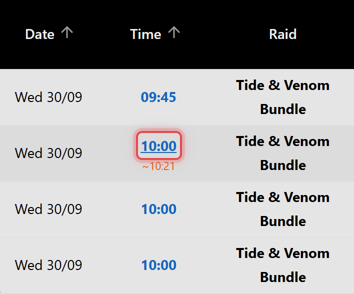
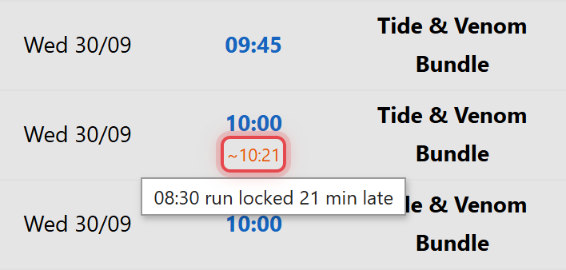

User guide
How to install Dawnhub Advertiser Tools, where its tools appear on Dawnhub, and how each of them works.
1. Getting started
You need Google Chrome on a computer and a Dawnhub account that you already use to book buyers.
- Open the downloads page and choose Chrome Web Store, then Add to Chrome.
- Chrome asks to let the extension read and change your data on
hub.dawn-boosting.com, and on Dawn'sdevhubtest site. That's how it adds its tools to Dawnhub's pages, and those are the only sites it runs on. - Reload any Dawnhub tab you already had open.
Where things appear
The tools appear directly on Dawnhub's raids list:
Click the extension's icon in Chrome's toolbar for links to each tool in this guide.
On macOS, use ⌘ wherever this guide says Ctrl.
2. Find a buyer
On the raids list, Find a buyer searches every raid in the dates set in Dawnhub's Start Date and End Date filters, on the region and list you're viewing, for a character. Type part of their name-realm to see which raids they're booked into, with their class, the advertiser who booked them, pot, deposit, paid status and source. Each result links to its raid in a new tab, Refresh reloads the bookings, and Close or Esc closes the search. What you see depends on which bookings Dawnhub shows your account.
3. Raids with slots available
A Show only raids with slots available tick above Dawnhub's own VIP armor filter hides every raid that's already full, VIP, curve and regular alike. Dawnhub's own filter only covers VIP raids. The tick works alongside Dawnhub's filters and is remembered between visits. On the curve list, which has no VIP filter, it sits next to Find a buyer instead.


4. Raid time links
Each raid's time on the raids list is a real link. Middle-click it or Ctrl+click it to open the raid in a new tab, or click it as normal to open it in place.


5. Late starts
Leaders run back to back, so when a leader's raid starts late, their next one usually does too. When the leader's raid before, up to 3 hours earlier, is still open past its start or locked late, a small orange time such as ~19:18 under a raid's start time shows when it will likely start. Hover over it to see why, for example 18:30 run locked 18 min late or 18:30 run still open 12 min after start. Less than 3 minutes late counts as on time, and more than 90 minutes as a raid left open by mistake.


The extension times a lock from Dawnhub's own refreshes of the raids list, every 30 seconds while a raids list is the tab in front, so it only knows the raids that locked while one was. Locks are remembered for a day, and shared between your Dawnhub tabs, so a leader's earlier raid counts even when it was listed on another list.
6. General troubleshooting
The buyer search or slots tick is missing
Reload the page after installing or updating the extension. Look for Find a buyer above the table on the raids list.
Something stopped working after Dawnhub changed
The extension works with Dawnhub's pages as they are, so a redesign on Dawnhub's side can break a tool until the extension is updated. Chrome Web Store installs update automatically once a fix is out.
7. Privacy in short
The extension works with the Dawnhub data your account can already see, and talks only to Dawnhub itself. There are no analytics and no servers of its own. Details are in the privacy policy.